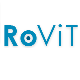

Abstract
Person re-identification (Re-ID) is a key challenge in computer vision, requiring the matching of individuals across cameras, locations, and time. While most research focuses on short-term scenarios with minimal appearance changes, real-world applications demand robust systems that handle long-term variations caused by clothing and physical changes. We present CHIRLA, Comprehensive High-resolution Identification and Re-identification for Large-scale Analysis, a novel dataset designed for video-based long-term person Re-ID. CHIRLA was recorded over seven months in four connected indoor environments using seven strategically placed cameras, capturing realistic movements with substantial clothing and appearance variability. The dataset includes 22 individuals, more than five hours of video, and about 1M bounding boxes with identity annotations obtained through semi-automatic labeling. We also define benchmark protocols for person tracking and Re-ID, covering diverse and challenging scenarios such as occlusion, reappearance, and multi-camera conditions. By introducing this comprehensive benchmark, we aim to facilitate the development and evaluation of Re-ID algorithms that can reliably perform in challenging, long-term real-world scenarios.
Long-term and video-based
Continuous videos instead of isolated crops, with the same people recurring across ten sessions recorded between May and December.
Real appearance change
Participants changed clothes between sessions, and put on or took off jackets, hats and accessories within them.
Dense per-identity data
Around 44K boxes per identity, more than previous clothing-change datasets, with higher-resolution crops where faces are often visible.
Open-set evaluation
Test sets include distractors that never appear in training, so models must decide when a person is unknown.
Explore the Data
A small selection of examples from CHIRLA. Follow one person across months and cameras, or see a single moment from all seven cameras at once.
Browse the full dataset on Hugging Face
Preview mode: these are placeholder tiles. Run tools/build_explorer.py on the dataset to generate the real crops and frames; this section fills in automatically.
Click any crop to see the full camera frame
Recording Environment
Three laboratories, a corridor and a small office at the University of Alicante. Cameras face the doorways, and their views barely overlap. Click a room to see how it is covered.
Connectivity schematic, not to scale. Exact camera poses are in Fig. 1 of the paper.
Seven cameras, five spaces
Reolink RLC-410W cameras with an 80° horizontal field of view, streamed and synchronized through ROS Noetic.
Benchmark
Four Re-ID scenarios and two tracking scenarios, each with its own splits. Below is the best reported result per scenario; the leaderboard has every method, sortable, with citations.
Full leaderboard and how to submit
Person re-identification
| Scenario | What it tests | Rank-1 (%) | mAP (%) |
|---|---|---|---|
| Reappearance | Leaving a camera’s view and coming back | 65.73ResNet101-IBN† | 63.85ResNet152 |
| Multi-camera | Different cameras within a session | 56.01ResNet152 | 55.90ResNet152 |
| Multi-camera long-term | Different cameras and different days | 24.31ResNet101 (384×128) | 35.28ResNet101-IBN† |
| Long-term | Same camera across different days | 18.81ResNet101 (256×128) | 23.24ResNet101 |
Closed-set results averaged over subsets. Rows go from easiest to hardest.
Person tracking
| Setting | What it tests | MOTA | IDF1 |
|---|---|---|---|
| Full test set | General tracking over 56 test videos | 68.84BoT-SORT† | 42.54BoT-SORT† |
| Brief occlusions | Fully hidden for one to five seconds | 12.42BoT-SORT | 19.15BoT-SORT |
| Multiple people and occlusions | People crossing or hiding each other | 21.83BoT-SORT | 33.88BoT-SORT |
† Variant using appearance features. To evaluate your own method, see the benchmark README.
Download
Pick the parts you need and copy the command. Most Re-ID work only needs the benchmark folders, not the raw videos.
Requires pip install -U huggingface_hub. The dataset is also mirrored on Science Data Bank, and a separate CLI downloader is described in the downloader instructions.
Each annotation file maps a frame number to the people in it: {"1": [{"id": 4, "BboxP": [x1, y1, x2, y2]}, …]}. Frames and IDs start at 1; negative IDs in the benchmark mark distractors.
Team
Citation
@article{dominguezdager2026chirla,
title = {CHIRLA: Comprehensive High-resolution Identification and
Re-identification for Large-scale Analysis},
author = {Dominguez-Dager, Bessie and Escalona, Felix and
Gomez-Donoso, Francisco and Cazorla, Miguel},
journal = {Scientific Data},
volume = {13},
number = {1},
pages = {109},
year = {2026},
doi = {10.1038/s41597-025-06425-3}
}